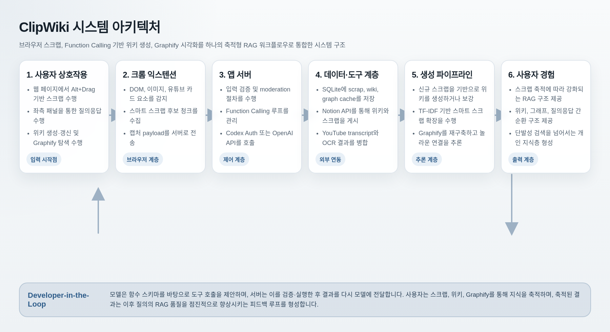
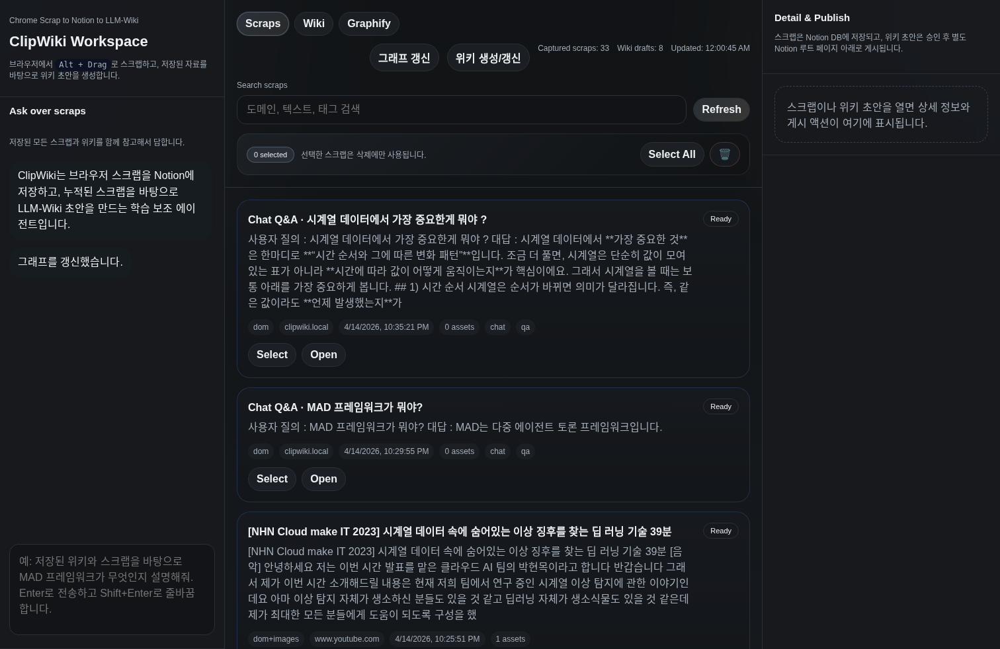
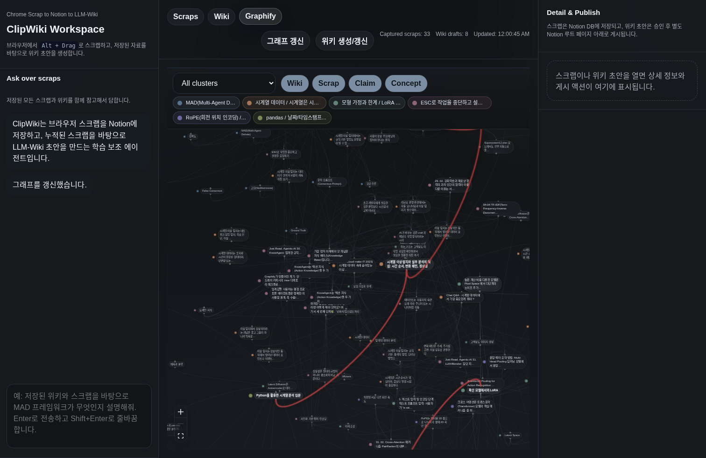

웹에서 수집한 자료를 점차 강화되는 RAG, 위키, 지식 그래프로 전환하는 브라우저 기반 AI 에이전트.
Alt+Drag 스크랩, 유튜브 transcript, 질문·답변 scrap 저장
위키 생성·보강, wiki-first RAG, Graphify 시각화

tool 이름·파라미터·설명을 JSON 스키마로 모델에 전달. 모델은 코드를 직접 실행하지 못해.
모델이 적절한 tool과 인수를 tool_calls 배열로 응답. 이 단계는 JSON 추천일 뿐.
백엔드가 Zod로 인수를 검증한 뒤 실제 함수를 실행. 모델 추천을 그대로 신뢰하지 않아.
실행 결과를 role: "tool" 메시지로 다시 모델에 전달하여 최종 응답 생성.
search_scrapsget_scrap_bundlesearch_wiki_draftsget_wiki_bundlecreate_wiki_draft
search_wiki_drafts 호출 확인+로 Q/A를 scrap으로 저장
chat 입력이 들어오면 모델 호출 전 moderation을 먼저 실행.
blocked: true 반환, 모델 호출 없이 차단 메시지 표시모델이 제안한 tool 인수를 실행 전 Zod가 검증. 타입·길이·범위 모두 체크.
위키 초안은 자동으로 Notion에 게시되지 않아. 사용자가 명시적으로 승인 버튼을 눌러야.
웹에서 본 조각을 개인 지식 자산으로 전환하고, 그 자산이 다시 더 나은 RAG가 되도록.